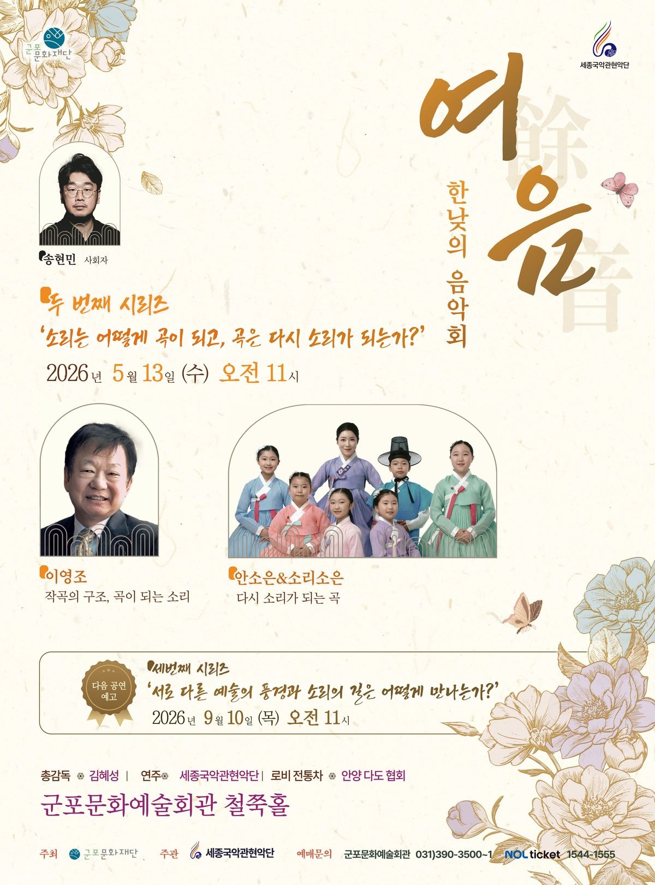

樂
세종국악관현악단
Sejong Korean Music Orchestra
since 1992
1992년 창단, 대한민국 최초의 양·국악 혼합편성 관현악단. 여민동락의 정신으로 한국음악을 현대에 재창조합니다.

1992년, 지휘자 박호성이 한국음악의 현대적 발전을 도모하고 진정한 국민음악으로서 생활 속에 정착시켜 나간다는 여민동락의 정신 아래 세종국악관현악단을 창단하였습니다.
2015년부터 김혜성 대표가 이끄는 지금, 우리는 국악기와 양악기가 함께 편성된 대한민국 최초의 국악심포니오케스트라로서 그 정신을 실현하고 있습니다. 세종대왕의 애민사상을 이어받아, 한국음악의 올바른 보존과 계승, 그리고 시대가 요구하는 현대적 재창조를 동시에 추구합니다.
우리다움을 잃지 않는 새로운 한국음악 — 그것이 세종의 길입니다.